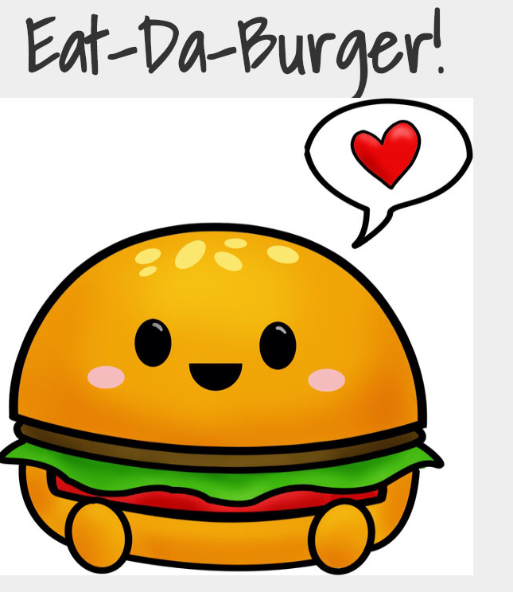
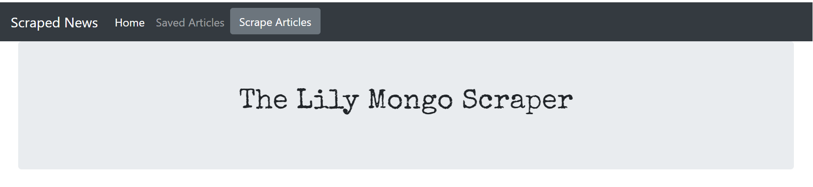

Portfolio
In this assignment, I created a burger logger with MySQL, Node, Express, Handlebars and an ORM. I followed a MVC design patter and used Node and MySQL to query and route data. Handlebars was used to generate HTML.
scrapedNews is a Web Scraping Application that uses Axios and Cheerio to scrape article headlines,summaries, and their original links. Users save their favorite articles and add a note about the newsarticle. Technologies used: Express-Handlebars for Templating Javascript and jQuery for front-end logic, ajax calls, and accessing page elements NodeJS and ExpressJS for setting up the server and routing Axios and Cheerio to Scrape Newspaper MongoDB/Mongoose to store articles and notes Bootstrap for Styling
Sanrio Character Clicker Game is a memory game that was built using React, Bootstrap and ES6. The application's UI is broken into 4 components. The object of the game is to not click on the same character twice.
I created a train schedule application that incorporates Firebase to host arrival and departure time. The library moment.js was also used to create this schedule.
A group assignment where users may enter keywords and other parameters to find articles from the New York Time using their API.

A website that was created to generate palatable recipes and restaurants by clicking on a state on a United States map. The website allows a user to register and allows them to save favorite recipes as well as their favorite eateries. This project utilized HTML, CSS, Javascript and JQuery. An Edamam Recipe Search and Open Table API was used to communicate with the Firebase Database.
In this assignment, I created a node.js app called LIRI, it is similar to iphones SIRI, but it is ran on the command line. This is a command line node app that takes in parameters and gives back data. In this app, LIRI has been given 4 commands.
- 'concert-this'
- 'spotify-this-song'
- 'movie-this'
- 'do-what-it-says'

Gimme Books is a full stack web app book for people who love books. Users are given the option to sign up for an account, which allows them to save their favorite books and given the New York Times best sellers list upon logging in. If they choose not to sign up, they are able to search for books by title or author. For the front end, this app utilizes Materialize.css as its main CSS framework and also Handlebars for it's templates for creating different views. AJAX was also used to gather information from the Google Books and New York Times API. The back end utilized an Express server with sessions, PassportJS and MYSQL database to allow user account creation, authorization, and storing user information, such as saving favorite books.
I built a compatibility shopping partner application. This is a full-stack site that took results from a user's survey, then compared their answers with those of other users. After the survey is taken, the name and an image will pop up with the most compatible shopping partner. Express was used to handle the routing.